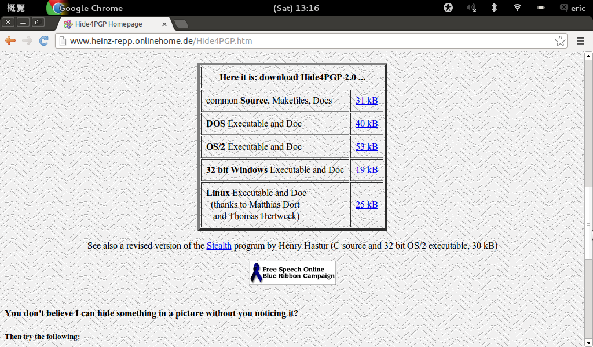
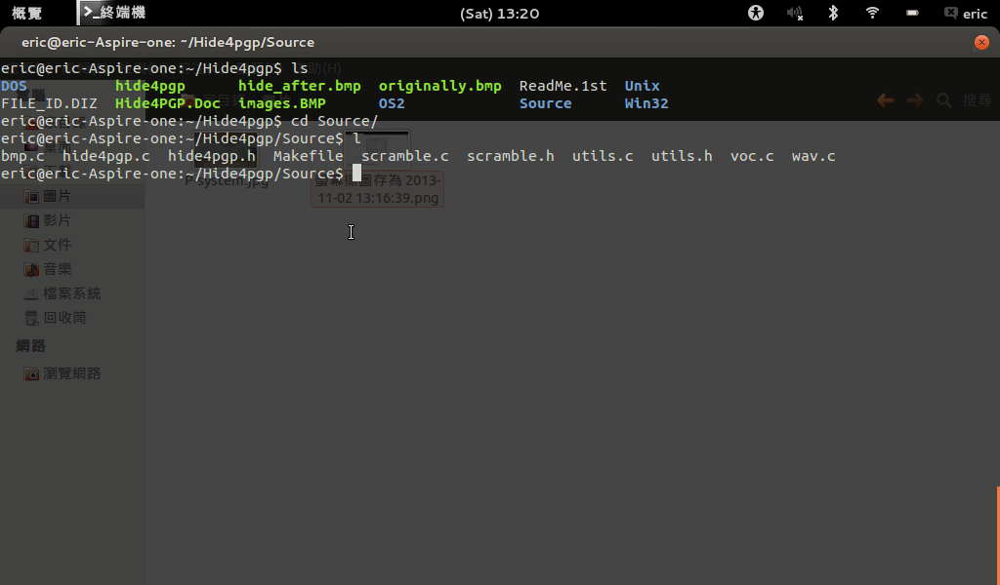
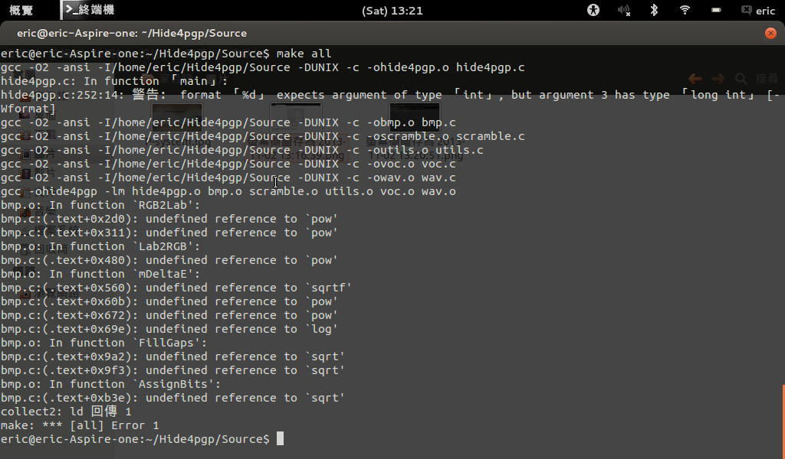
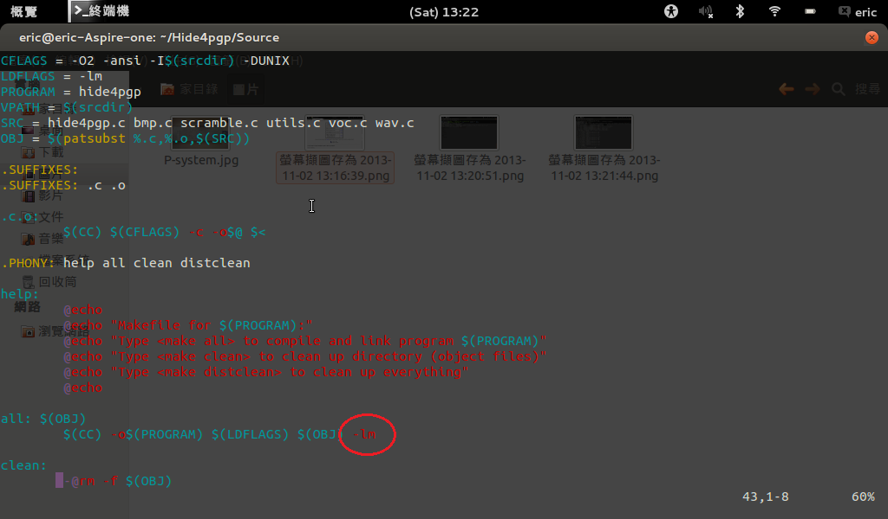
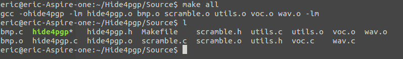

下載Linux Executable and Doc，他裡面就包含了compile好的binary檔案，解壓縮後可以直接拿來使用，也可以下載common Source, Makefiles, Docs，他裡面的sorce file都是用C寫的

他還很好心的幫你寫了makefile檔案，只是如果直接用他的makefile會出現一些小問題

解決這問題只要在obj link 後面多家l跟m的參數就OK~~

接下來就make all就大功告成啦!
